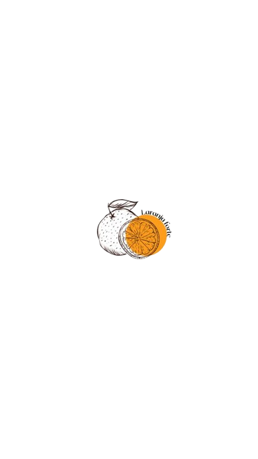
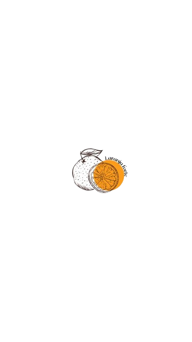

Resumo do livro:
"O Amor Não É Óbvio", de Elayne Baeta, é um livro juvenil que explora a complexidade do amor, especialmente o amor lésbico, através da perspectiva da adolescente Íris. A história acompanha Íris em suas reflexões sobre amor, paixão e identidade, enquanto ela se questiona sobre o que significa ser apaixonada e como lidar com seus sentimentos em um ambiente escolar e social onde o amor é frequentemente retratado de forma estereotipada.
Íris tem 17 anos e está prestes a ser formar no 3° ano. Tudo ia tranquilo na sua vida, a maior emoção que ela tinha era assistindo a novela na casa de sua vizinha idosa. Entretanto tudo muda quando Cadu Sena, seu eterno crush, fica solteiro. Quem sabe essa era a chance pela qual Íris estava esperando! Mas antes ela queria entender melhor esse término repentino e resolve investigar Édra Norr, a garota com quem a ex do Cadu estava ficando. Em O Amor Não É Óbvio acompanhamos as descobertas da jovem Íris nesse período tão conturbado da vida.